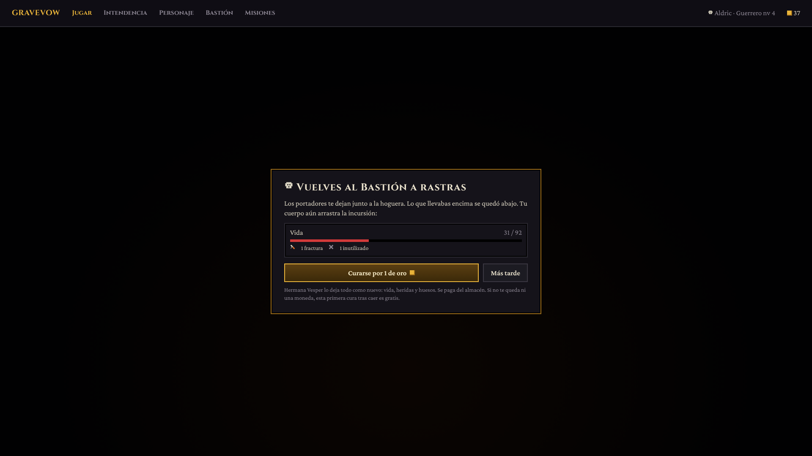
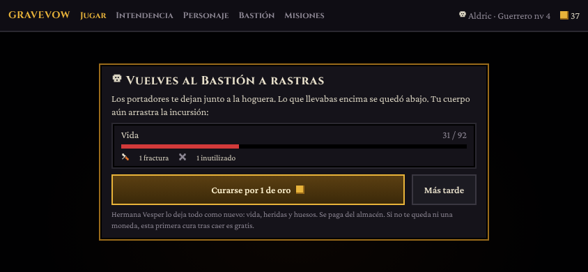
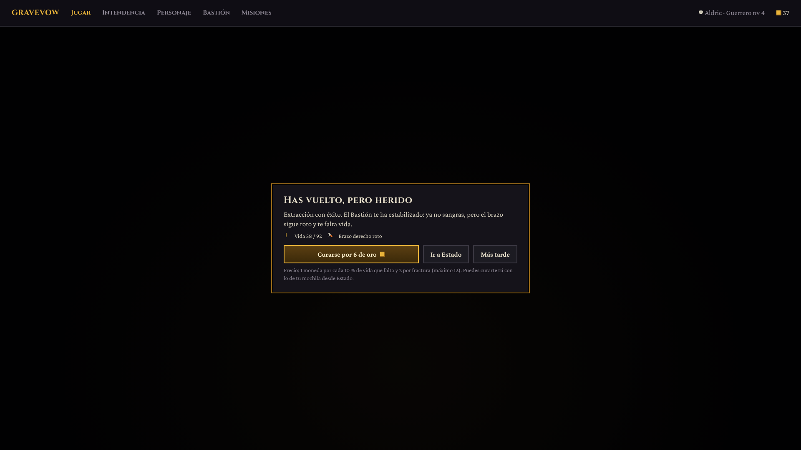
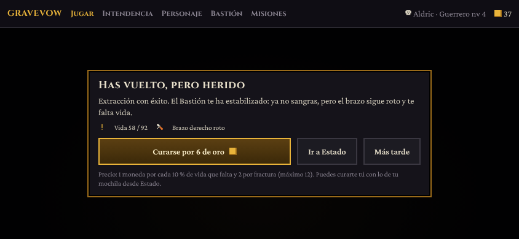
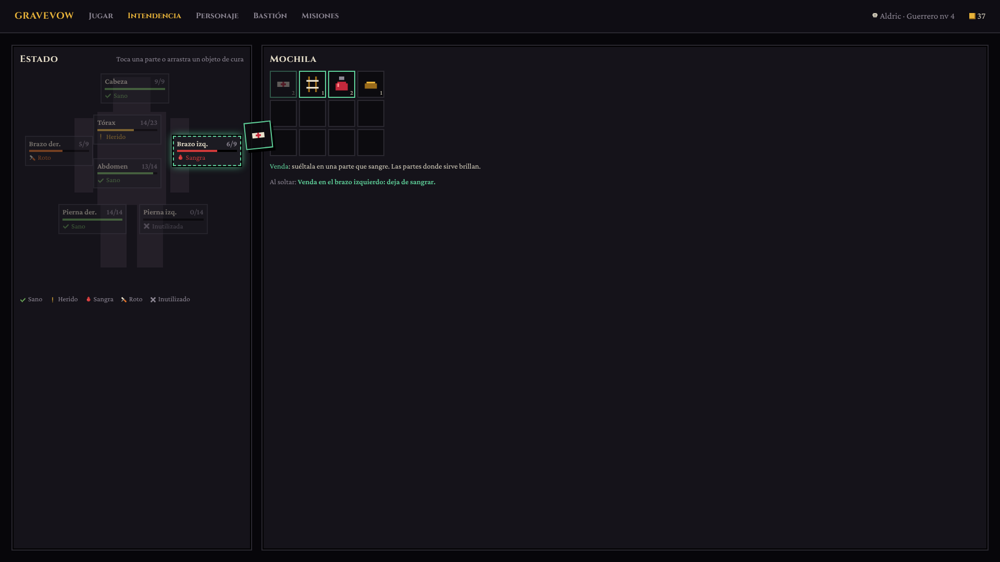
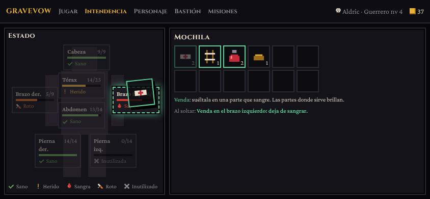
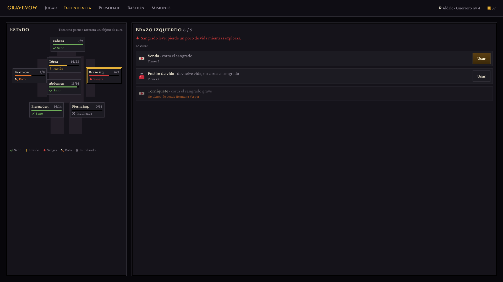
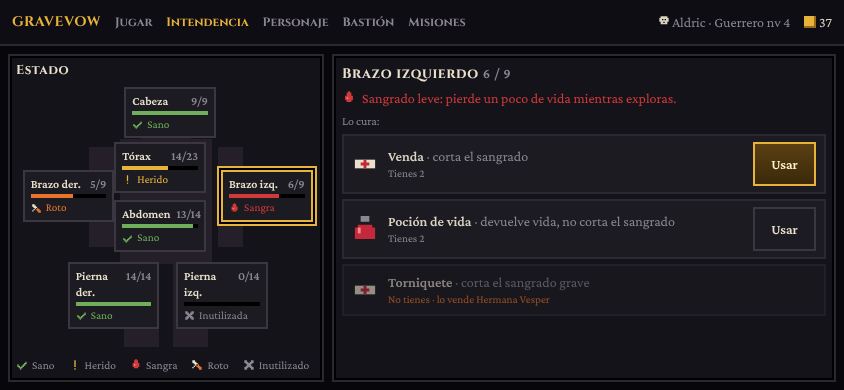

Escritorio 1920 × 1080 y móvil en horizontal 844 × 390. La maqueta interactiva es maqueta.html (parámetros v=muerte|regreso|estado|lista y m=1 para móvil). Para regenerar las imágenes, abre la maqueta desde la carpeta del proyecto (usa las fuentes de node_modules).







